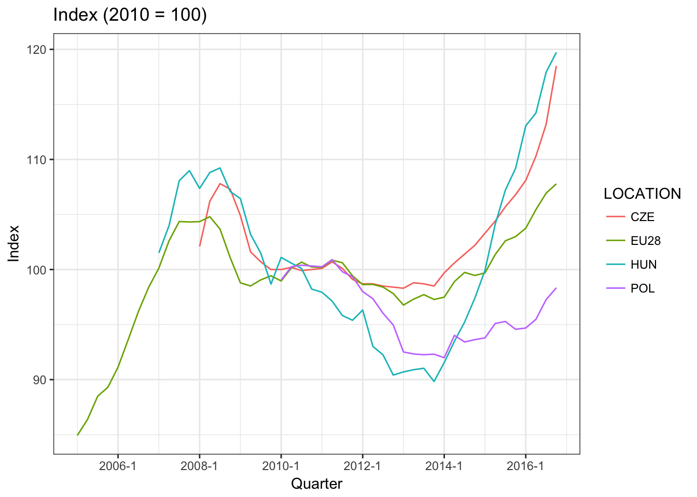
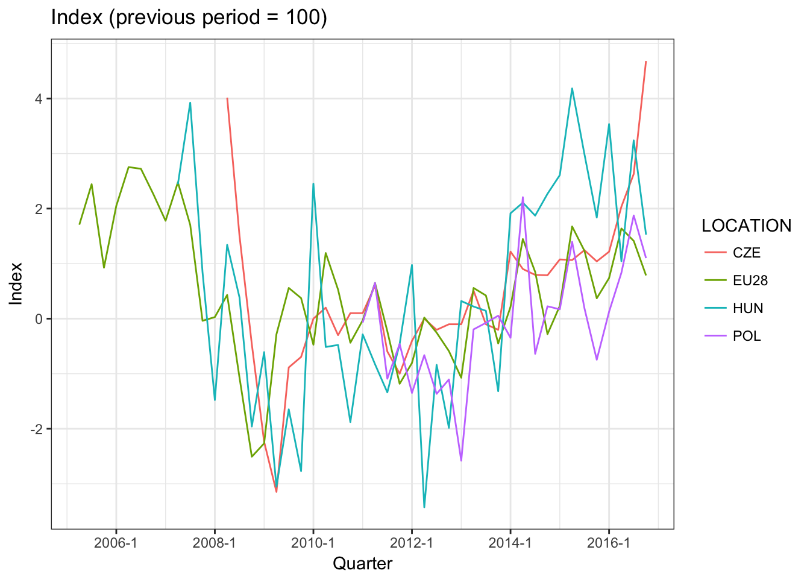
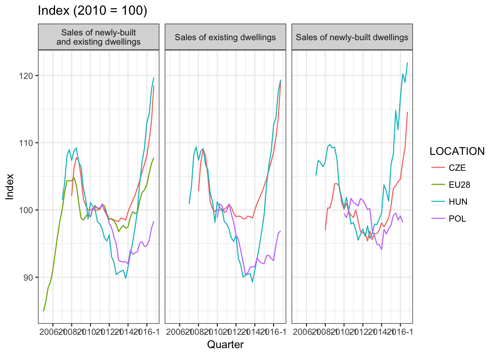

3 Data sources on real estate market
3.1 Basic data sources
- Land surveying documentation (dokumentacja geodezyjna)
- Mortgage registers (księgi wieczyste)
- Notarial deeds (akty notarialne)
- Reports and results of conducted analysis
- Surveys (based on questionaires)
- The Internet
- Newspaper offers
Research on Real Estate Market in Poland by Central Statistical Office (selected)
- LIVING CONDITIONS, SOCIAL ASSISTANCE
- 1.25.01(064) Household budgets
- 1.25.08(067) European Union Statistics on Income and Living Conditions
- 1.25.12(070) Poverty and social exclusion
- DWELLINGS, COMMUNAL INFRASTRUCTURE
- 1.26.01(073) Housing management
- 1.26.04(074) Property trade
- 1.26.06(075) Water, sewerage, heating, gas and electricity infrastructure
- 1.26.08(076) Municipal solid waste and the maintenance of municipalities in a clean and orderly condition
- 1.26.09(077) A survey of prices of housing and commercial properties
- 1.26.10(078) Description of housing resources
- AGRICULTURAL AND FORESTRY ACTIVITIES
- 1.45.02(124) Land management
- 1.45.03(125) Land use
- CONSTRUCTION ACTIVITIES
- 1.47.01(157) Construction and assembly production; costs listed by function of expense
- 1.47.04(158) Building permits issued and building notices submitted for the construction of buildings; effects of construction activities
- 1.47.05(159) Buildings completed
- 1.47.06(160) Demolition orders issued
- REGIONAL STUDIES
Source: Statistical Research Program of Public Statistics for 2017
3.2 Where we can get these data?
- Publications:
- Industry, Construction, Fixed Assets – http://stat.gov.pl/en/topics/industry-construction-fixed-assets/
- Municipal infrastructure – http://stat.gov.pl/en/topics/municipal-infrastructure/
- Real Estate Sales
- Municipal infrastructure
- Housing economy
- National Census of Population and Housing 2011
- Poland - macroeconomic indicators
- Selected monthly macroeconomic indicators
- Quarterly macroeconomic indicators
- Annual macroeconomic indicators
- Local data bank – https://bdl.stat.gov.pl/BDL/dane/podgrup/temat
- HOUSING ECONOMY AND MUNICIPAL INFRASTRUCTURE
- INDUSTRY AND CONSTRUCTION
- LOCAL GOVERNMENT (eg. taxes)
- Realized by NBP:
- 1.26.09(077) Badanie cen nieruchomości mieszkaniowych i komercyjnych
- Reports:
- Report on the situation in the Polish residential and commercial real estate market (yearly)
- House Prices Database - BaRN (2006 Q3 - 2016 Q3)
- Information on home prices and the situation in the residential and commercial real estate market in Poland (quarterly)
Source: http://www.nbp.pl/homen.aspx?f=/en/publikacje/inne/real_estate_market_pre.html
3.3 Obtaining data from the Internet
Here we will focus on two packages OECD and eurostat, which allows to download data directly from OECD and Eurostat databases.
In the first step we will install these two packages
install.packages(c('OECD','eurostat'))Then, we need to load them
library('eurostat')
library('OECD')3.3.1 OECD package
Now, we will focus on OECD package which consist of the following functions
browse_metadata– Browse the metadata related to a series.get_dataset– Download OECD data sets.get_datasets– Get a data frame with information on all available datasets.get_data_structure– Get the data structure of a dataset.search_dataset– Search codes and descriptions of available OECD series
Let’s check what data sources are related to real estate market.
d <- search_dataset('real estate')
d## # A tibble: 0 × 2
## # ... with 2 variables: id <fctr>, title <fctr>Unfortunately, there are no tables that contains this term. Now, we can check property which is a general term for objects on real estate market
d <- search_dataset('Property')
d## # A tibble: 2 × 2
## id
## <fctr>
## 1 RPPI
## 2 RPPI_TARGET
## # ... with 1 more variables: title <fctr>We found two indicators RPPI and RPPI_TARGET. We can use function browse_metadata to provide information about these indicators.
3.3.1.1 RPPI – Residential Property Prices Indices
RPPI – Residential Property Prices Indices (RPPIs) – also named House price indices (HPIs), are index numbers that measure the price of residential properties over time. RPPIs are key statistics not only for citizens and households across the world, but also for economic and monetary policy makers. Among their professional uses, they serve, for example, to monitor macroeconomic imbalances and risk exposure of the financial sector.
Types of dwelling - please note that the classification and terminology may differ significantly from country to country.
- ‘All type of dwellings’ refers to all kind of dwellings purchased by households regardless of their the structural characteristics, e.g. single-detached houses, semi-detached houses, terraced houses, row houses or townhouses, multi-family apartments, condominiums, and coops, etc.
- ‘Single-family dwellings’ are generally free standing residential building, e.g. detached house
- ‘Multi-family dwellings’ are multiple separate housing units for residential inhabitants contained within one building or several buildings within one complex, e.g. apartment building, duplex or semi-detached house, and townhouse.
The statistical population is as follows
- The ‘Residential property Price Indices - Complete database’ dataset mainly contains quarterly statistics and related statistical methodological information for the 34 OECD member countries and for some non-member countries.
This dataset focuses on comparable series for 3 target indicators:
RPPI- Sales of newly-built and existing dwellings, all types of dwellings, whole country;RPPI- Sales of newly-built dwellings, all types of dwellings, whole country and;RPPI- Sales of existing dwellings, all types of dwellings, whole country.
When none of these indicators was available, another one was selected. This is particularly true for Australia, Chile, Korea, Switzerland and the United States.
Data are available at a quarterly frequency for all the countries. For Canada, Chile, Israel, Japan, Korea and Turkey monthly data are also available.
3.3.1.2 RPPI_TARGET – Residential Property Prices Indices (Headline indicators)
Now, let’s check RPPI_TARGET variable
- The dataset called “Residential Property Price Indices (RPPIs) – Headline indicators” presents, for each country, the RPPI that is available at the most aggregate level.
The ‘Residential property Price Indices - Headline indicators’ mainly contains quarterly statistics and related statistical methodological information for the 34 OECD member countries and some non-member countries.
The Price Index based on sales of newly-built and existing dwellings over the whole country (RPPI - Sales of newly-built and existing dwellings, all types of dwellings, whole country) was systematically selected when available. When this indicators was not available, another one was selected. This is particularly true for Switzerland, Canada, Turkey, Japan, Norway, Australia, Greece, Korea and the United States.
Data are available at a quarterly frequency for all countries. For Canada, Chile, Israel, Japan, Korea and Turkey monthly data are also available.
3.3.1.3 Obtaining the data
First, we should apply function get_data_structure to verify the structure prior downloading
headline_struct <- get_data_structure('RPPI_TARGET')
str(headline_struct,1)## List of 12
## $ VAR_DESC :'data.frame': 12 obs. of 2 variables:
## $ LOCATION :'data.frame': 46 obs. of 2 variables:
## $ SUBJECT :'data.frame': 8 obs. of 2 variables:
## $ GEO_COVERAGE :'data.frame': 3 obs. of 2 variables:
## $ MEASURE :'data.frame': 3 obs. of 2 variables:
## $ FREQUENCY :'data.frame': 3 obs. of 2 variables:
## $ TIME :'data.frame': 977 obs. of 2 variables:
## $ OBS_STATUS :'data.frame': 14 obs. of 2 variables:
## $ UNIT :'data.frame': 305 obs. of 2 variables:
## $ POWERCODE :'data.frame': 32 obs. of 2 variables:
## $ REFERENCEPERIOD:'data.frame': 78 obs. of 2 variables:
## $ TIME_FORMAT :'data.frame': 5 obs. of 2 variables:This is a list that contains the following variables
headline_struct$VAR_DESC## id description
## 1 LOCATION Country
## 2 SUBJECT Subject
## 3 GEO_COVERAGE Geographical coverage
## 4 MEASURE Measure
## 5 FREQUENCY Frequency
## 6 TIME Time
## 7 OBS_VALUE Observation Value
## 8 TIME_FORMAT Time Format
## 9 OBS_STATUS Observation Status
## 10 UNIT Unit
## 11 POWERCODE Unit multiplier
## 12 REFERENCEPERIOD Reference periodThere are three indicators that we could focus on.
headline_struct$MEASURE## id label
## 1 IXOB Index
## 2 GY Percentage change on the same period of the previous year
## 3 GP Percentage change from previous periodAnd have the following frequency
headline_struct$FREQUENCY## id label
## 1 A Annual
## 2 Q Quarterly
## 3 M MonthlyFor the purpose we will focus only on the following locations
- POL
- EU28
- CZE
- HUN
headline <- get_dataset(dataset = 'RPPI_TARGET',
filter = list(c('POL','EU28','CZE','HUN'))) %>%
filter(FREQUENCY == 'Q') %>%
select(LOCATION, obsTime, obsValue,MEASURE) %>%
mutate(obsTime = as.yearqtr(obsTime, format = '%Y-Q%q'))Now, plot the data
headline %>%
filter(MEASURE == 'IXOB') %>%
ggplot(data = .,
aes(x = obsTime,
y = obsValue,
group = LOCATION,
colour = LOCATION)) +
geom_line() +
scale_x_yearqtr() +
theme_bw() +
ggtitle('Index (2010 = 100)') +
xlab('Quarter') +
ylab('Index')
We can also use these data to plot different index
headline %>%
filter(MEASURE == 'GP') %>%
ggplot(data = .,
aes(x = obsTime,
y = obsValue,
group = LOCATION,
colour = LOCATION)) +
geom_line() +
scale_x_yearqtr() +
theme_bw() +
ggtitle('Index (previous period = 100)') +
xlab('Quarter') +
ylab('Index')
Now, lets, check the same countries but for the index RPPI.
rppi_dict <- get_data_structure('RPPI')
rppi <- get_dataset('RPPI',
list(c('POL','EU28','CZE','HUN'))) %>%
filter(FREQUENCY == 'Q',
MEASURE == 'IXOB') %>%
select(SUBJECT, LOCATION, obsTime, obsValue) %>%
mutate(obsTime = as.yearqtr(obsTime, format = '%Y-Q%q'))Let’s plot the data
rppi %>%
ggplot(data = .,
aes(x = obsTime,
y = obsValue,
group = LOCATION,
colour = LOCATION)) +
geom_line() +
scale_x_yearqtr() +
theme_bw() +
ggtitle('Index (2010 = 100)') +
xlab('Quarter') +
ylab('Index') +
facet_wrap(~SUBJECT,
labeller = labeller(SUBJECT =
c(RP0101='Sales of newly-built\nand existing dwellings',
RPEX01='Sales of existing dwellings',
RPNW01='Sales of newly-built dwellings')))